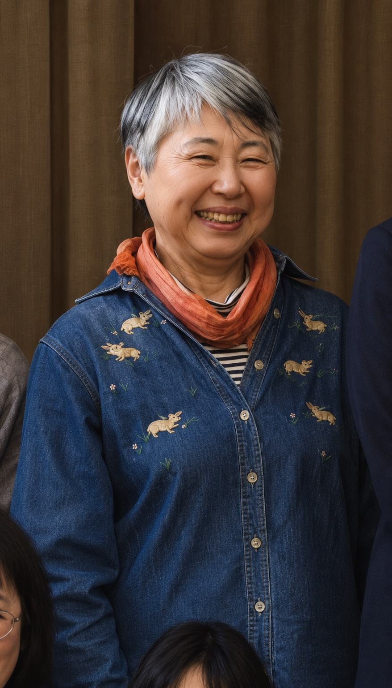

PROFILE / EXECUTIVE COMMITTEE
山根 澄子
YAMANE SUMIKO
IWAMI ARTS PROJECT 実行委員｜湯里まちづくりセンター センター長

CULTURE / COMMUNITY
地域に根ざし、
芸術の場をともにつくる。
湯里まちづくりセンターのセンター長として地域に携わり、IWAMI ARTS PROJECTの実行委員として活動を支える。
2016年、IWAMI ARTS PROJECTが構想段階にあった頃から、代表・竹内大樹の取り組みにさまざまな形で協力。2021年からは本格的に実行委員として参加し、石見の地域文化と芸術活動を支えている。
公演やワークショップなど、地域に芸術が息づく機会をつくるプロジェクトを、長年にわたって支えてきた。
HISTORY / INVOLVEMENT
プロジェクトとの歩み.
構想段階からの協力
IWAMI ARTS PROJECTの構想当初から、地域に根ざした活動の立ち上げに協力。
実行委員として参加
2021年より本格的に実行委員として参画し、事業を支える。
MORE / RELATED PROJECT
石見の芸術文化を支える仲間
舞台公演・芸術体験・地域との協働を続けるIWAMI ARTS PROJECTの活動をご紹介します。
竹内 大樹代表 ↗